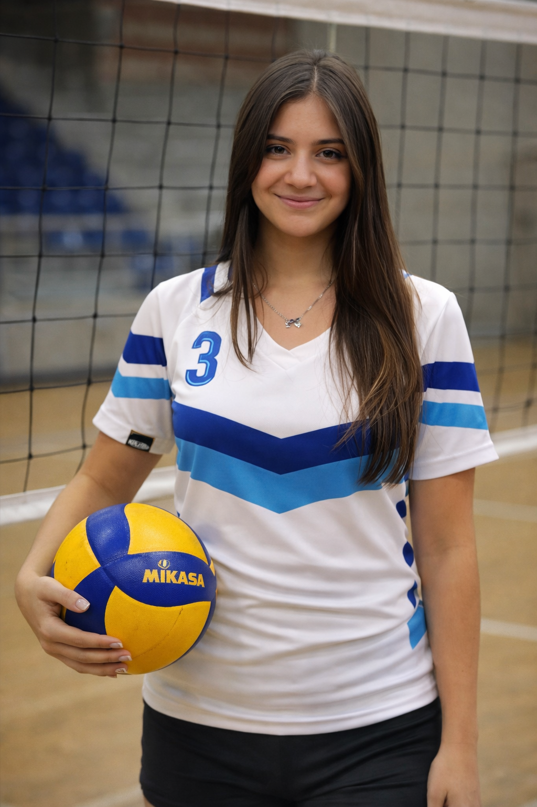
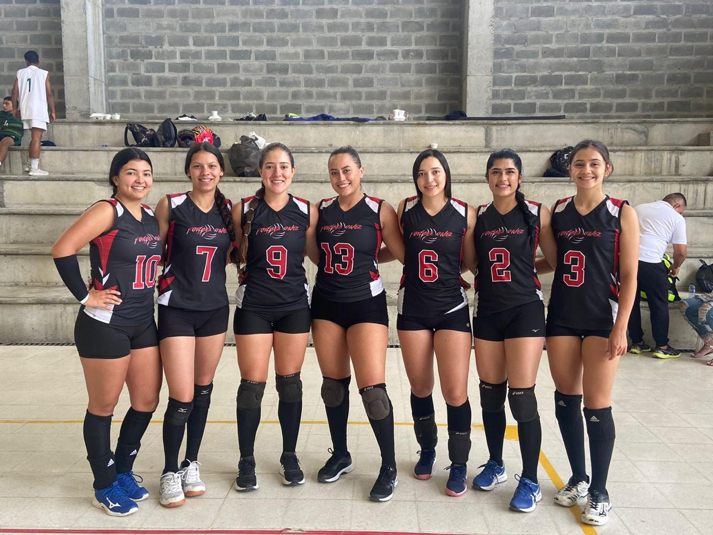
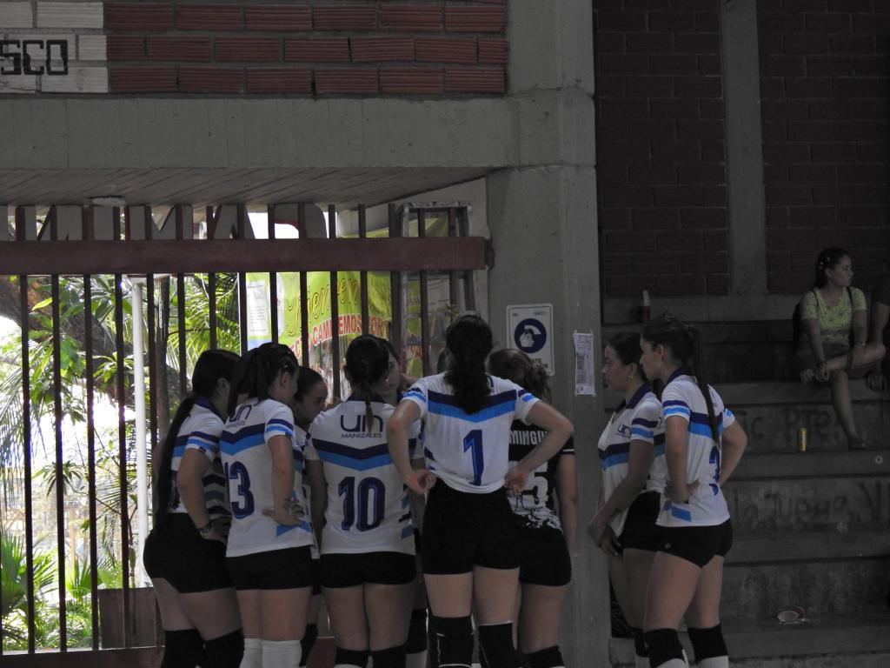
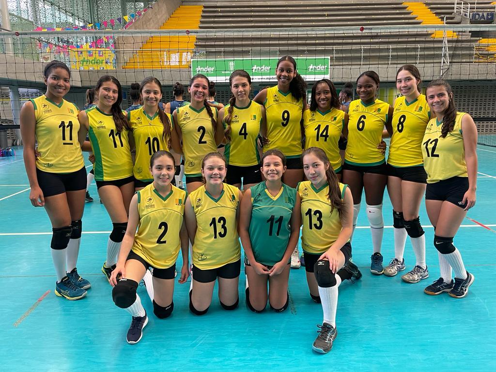
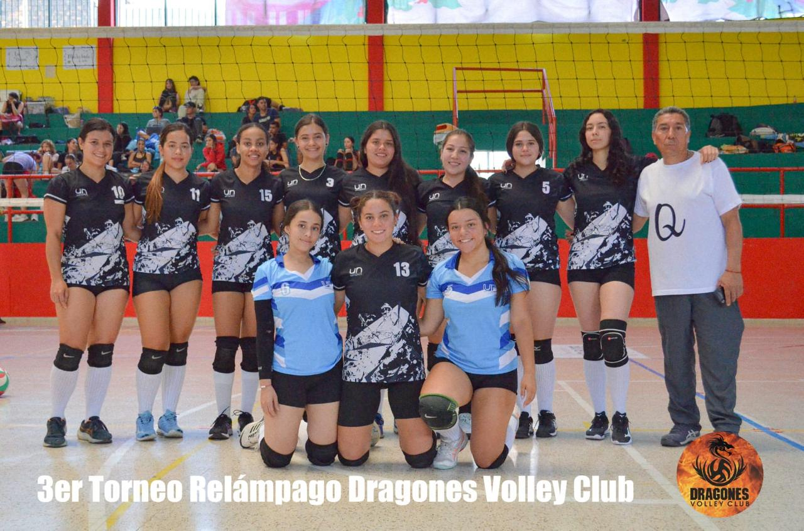

El voleibol ha sido una parte fundamental de mi vida desde inicios de 2018. A lo largo de estos años he construido una trayectoria marcada por la disciplina, el compromiso y la pasión por el juego. He tenido la oportunidad de entrenar y competir en distintos clubes, lo que me ha permitido conocer diversos estilos de juego, fortalecer mi mentalidad competitiva y adaptarme a diferentes dinámicas de equipo. Además, he representado a equipos en múltiples escenarios deportivos a lo largo de Colombia, experiencias que han contribuido significativamente a mi crecimiento personal y deportivo.
Durante un año formé parte de la liga departamental, donde elevé mi nivel técnico y táctico enfrentando competencias de mayor exigencia. Posteriormente, he consolidado mi proceso deportivo al integrar durante cuatro años la selección de voleibol de la Universidad Nacional, participando en zonales universitarios que han reforzado mi preparación, constancia y capacidad de trabajo bajo presión.
En la cancha desempeño principalmente la posición de central, rol que exige lectura del juego, velocidad de reacción y presencia ofensiva. Aunque también he jugado como esquina y opuesta, mi mayor fortaleza es el ataque: buscar puntos decisivos, presionar al rival y mantener una actitud ofensiva constante. Usualmente porto el número 3, símbolo personal de mi identidad deportiva y del compromiso que llevo a cada partido.
Más allá de los resultados, el voleibol ha sido una escuela de vida que me ha enseñado disciplina, resiliencia, trabajo en equipo y liderazgo. Cada entrenamiento y competencia representan una oportunidad para seguir creciendo, superarme y aportar positivamente al grupo. Mi objetivo es continuar fortaleciendo mis habilidades y mantener viva la pasión que me impulsa a competir y mejorar día a día.




| Perfil Deportivo | |
|---|---|
| Posición | Central |
| Posición secundaria | Opuesta / Esquina |
| Número de juego | 3 |
| Años de experiencia | Desde febrero de 2018 |
| Fortalezas | Ataque ofensivo, lectura de juego, trabajo en equipo |
| Altura | 1.73 m |